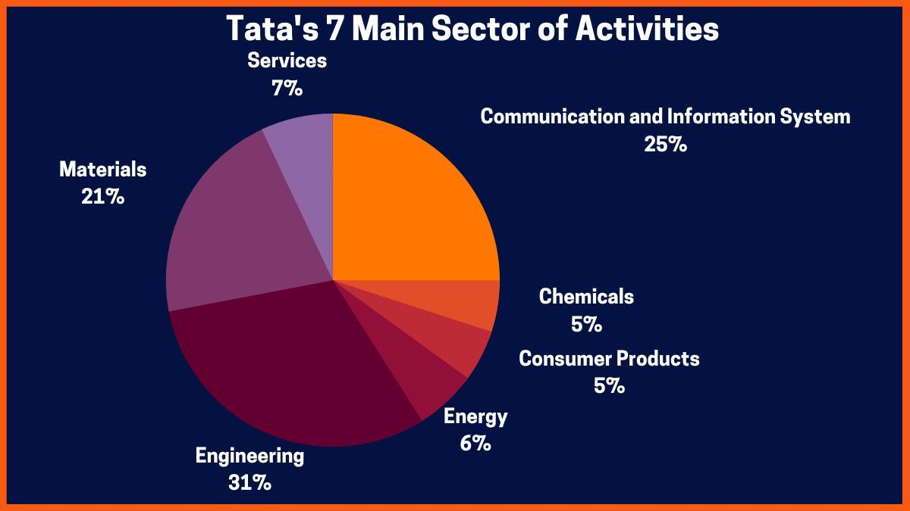

Tata's position as a powerhouse in the Indian stock market. :-
Here's some information about the growth of Tata's companies in 2023:
=> Indian Hotels: India's largest hospitality company by market capitalization, Indian Hotels is up 38% in 2023.
=> Tata Power: Tata Power is up 57% in 2023.=> Tata Steel: Tata Steel is up 21% in 2023.
=> Tata Investment Corporation Ltd: Tata Investment Corporation Ltd's shares gained 19% in early trade in January 2024 after reporting a 53% rise in consolidated net profit in Q3 2023.=> Other Tata stocks that have grown in 2023 include:
=> Tata Elxsi 41%
=> Titan 39%
=> TCS 17%
